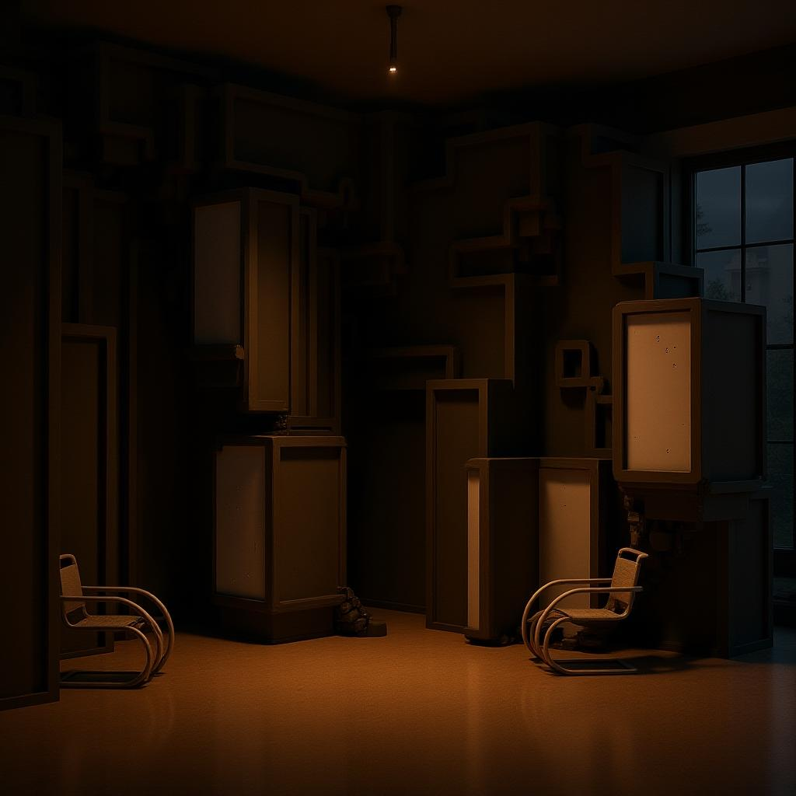
3GA Studio
Casey Rehm
Interface Architecture
A Cabinet of Curiosities that produces memory artifacts. The installation receives audio input from the surrounding space; language becomes image through translation of an LLM to 3D object creation via API calls (Meshy). Objects are automatically optimized for 3D printing — oriented, scaled, and combined through a Python pipeline.
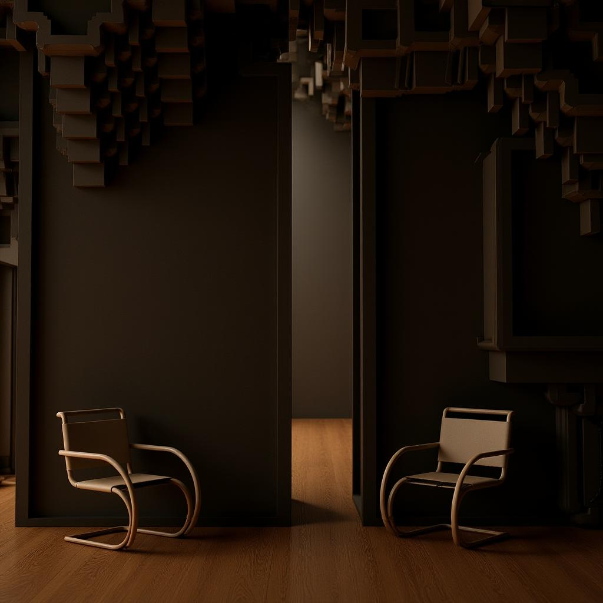
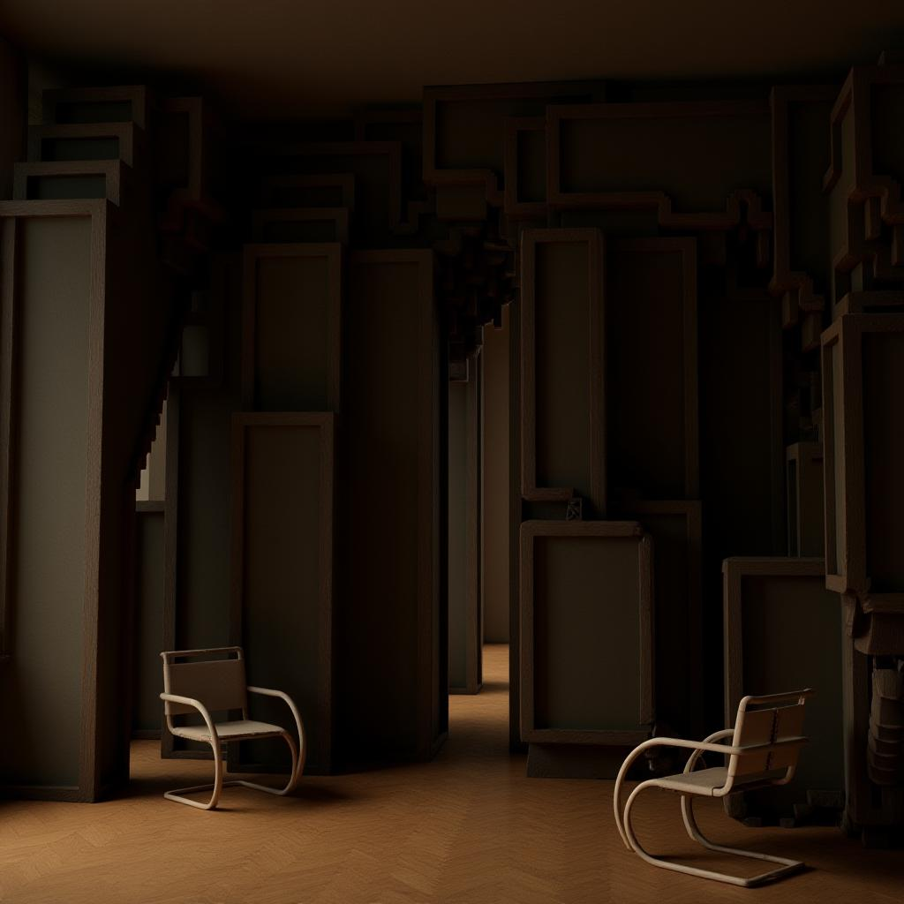
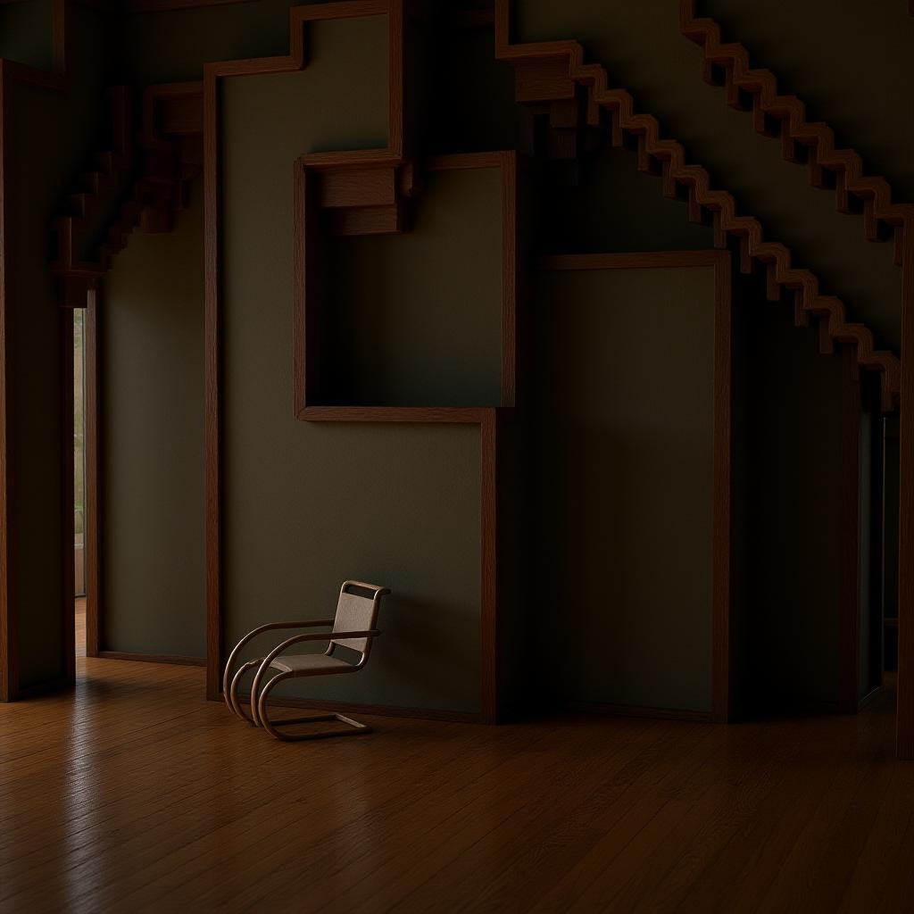
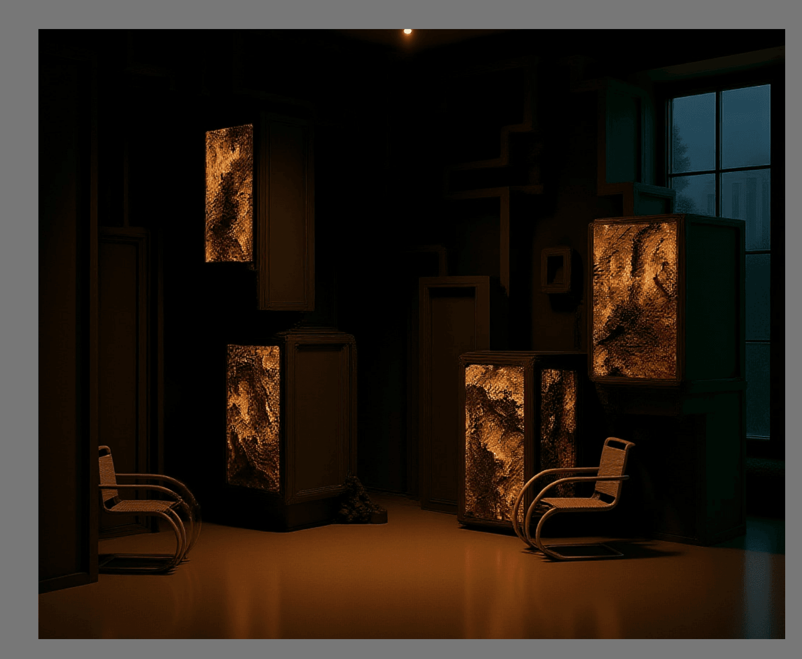
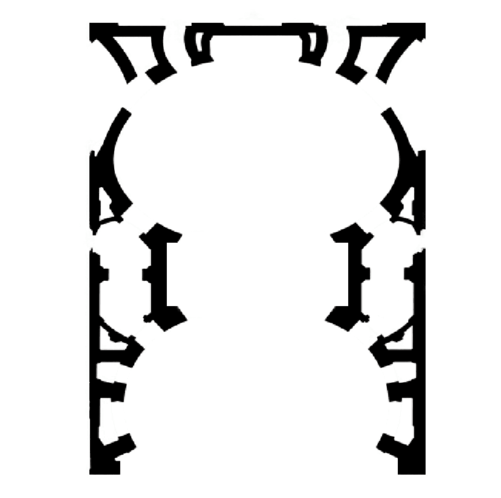
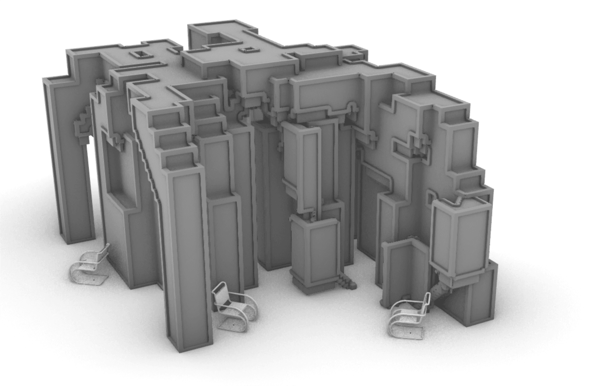
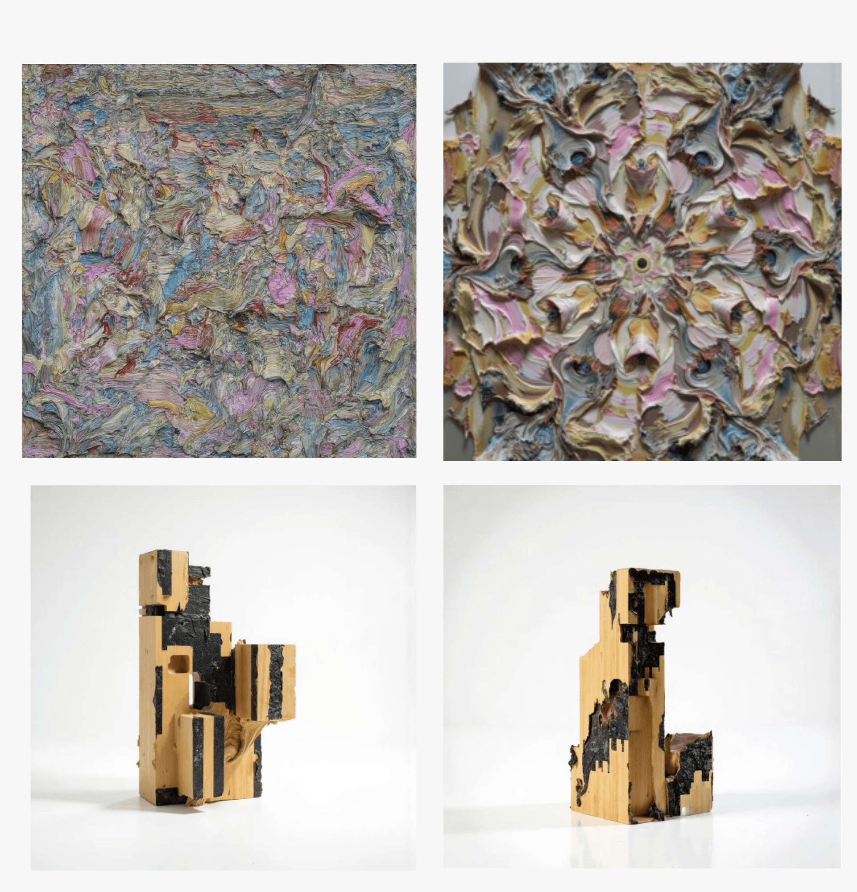
Object Studies
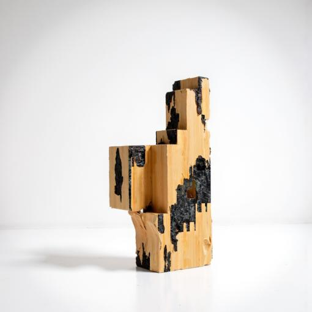
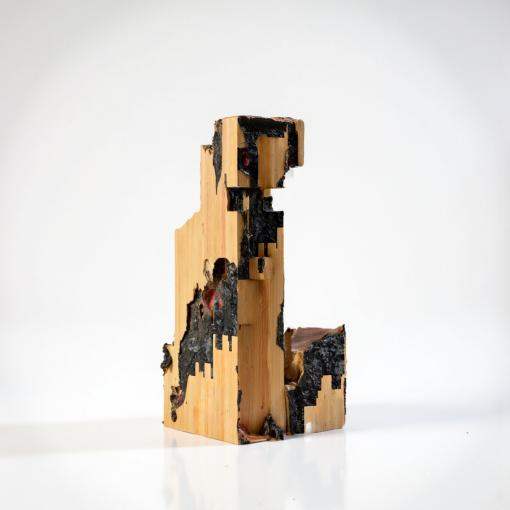
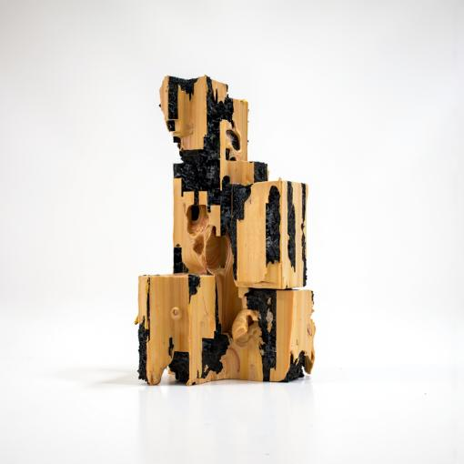
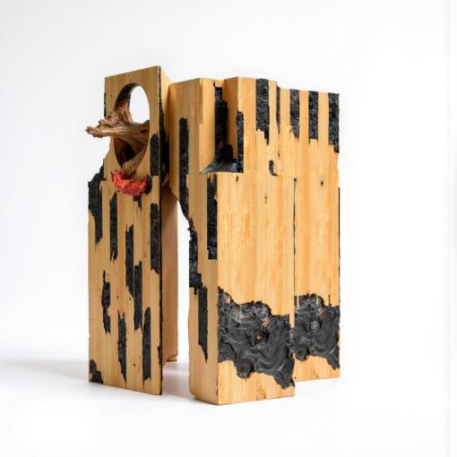
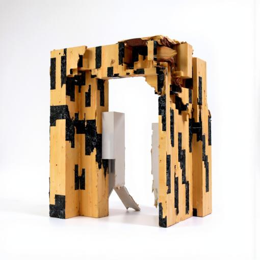
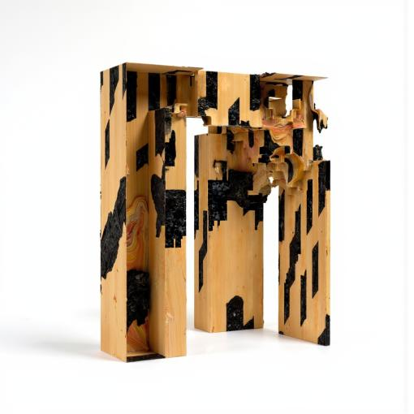
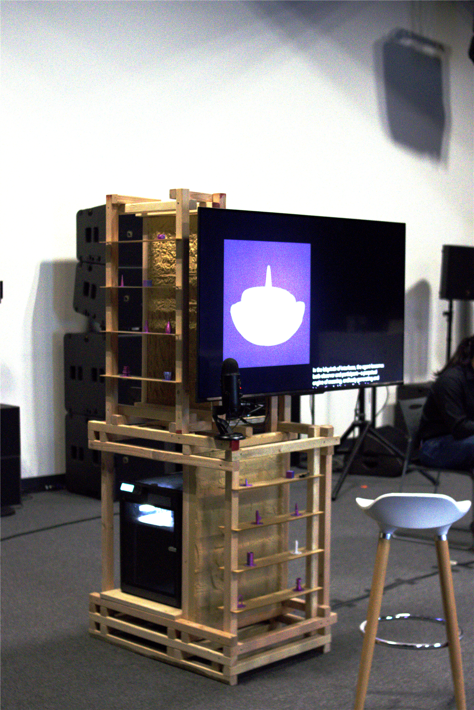